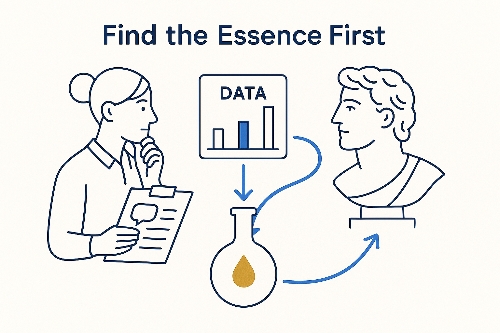

Distil the essence before the detail — in interviews, grasp the data and the bigger picture first, then drill down; and quickly identify what actually works in the giants who came before us.

> Distil the essence before the detail — in interviews, grasp the data and the bigger picture first, then drill down; and quickly identify what actually works in the giants who came before us.
Find the essence first is a way of working, and it points in two directions. Outward, in interviews: before you model a single table, understand the data and the bigger picture — what this domain is really about, what matters and what is noise. Grasp the essence, *then* drill down into the details. Do it the other way around and you build a precise model of the wrong thing, because you never stepped back far enough to see what you were modeling.
Backward, toward the giants: the same skill, aimed at the literature. Data Vault, Kimball, Inmon, the Unified Star Schema, Alec Sharp, FCO-IM, ensemble modeling — you don’t have time to adopt each one whole, and you don’t need to. The move is to quickly identify the *essentials* of each — the one or two ideas that actually work and are worth keeping — and learn from them without drowning in the whole apparatus. Distil, then reuse.
This is the top-down half of thinking in structures, and it pairs with decomposition and simplification: find the essence, break it into the right parts, and make each part as plain as it can be. Essence first is what keeps the detail in service of the meaning instead of burying it.
Where it lives: the signature principle of Breakthrough Modeling — meaning before detail, in the room and in the books.